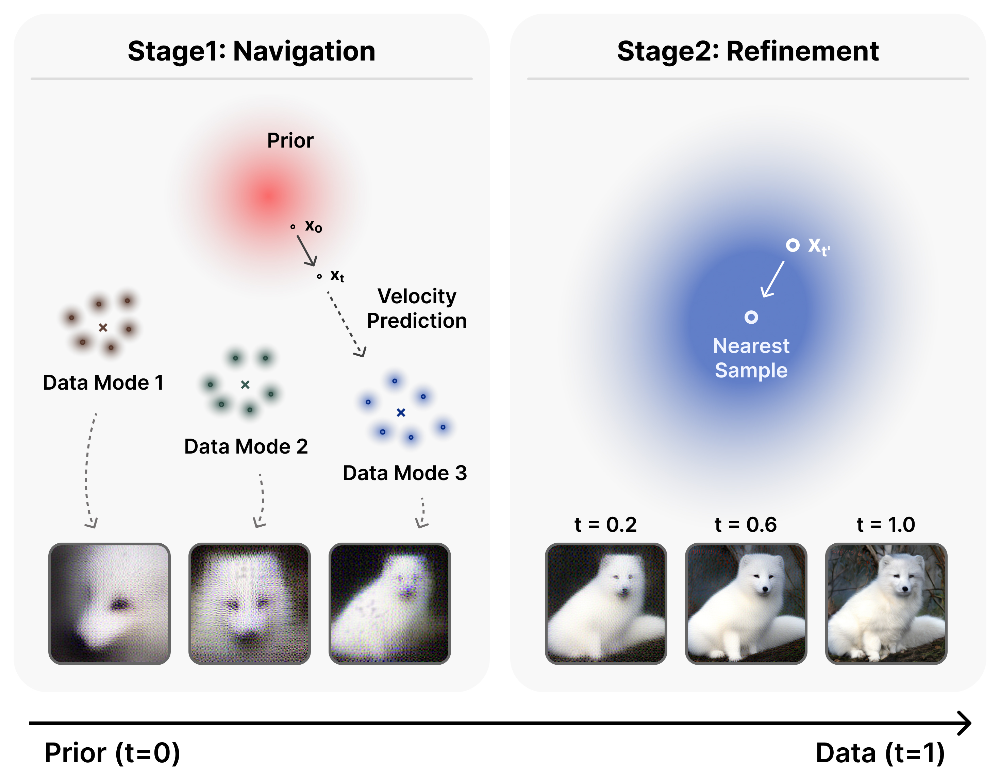
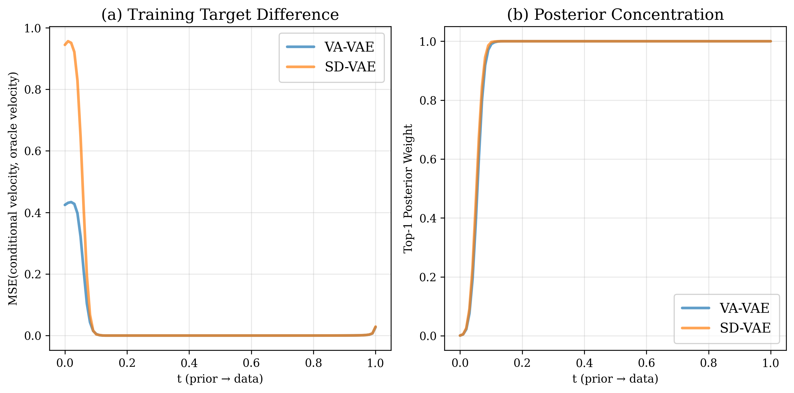
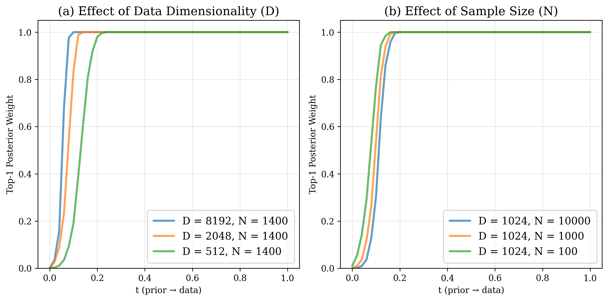
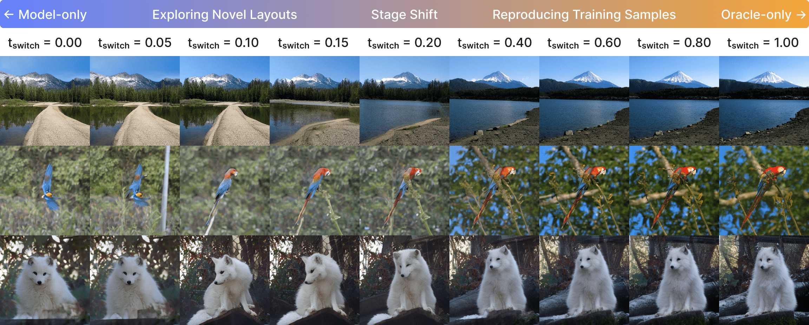
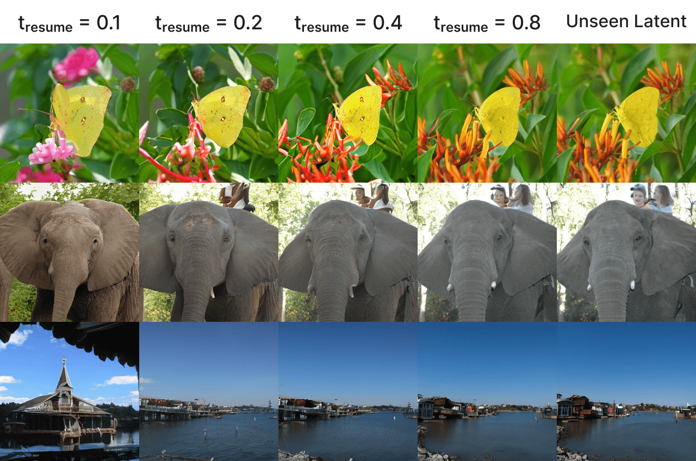
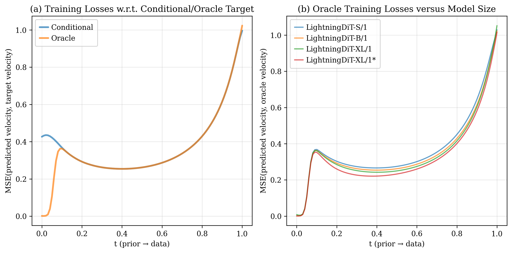
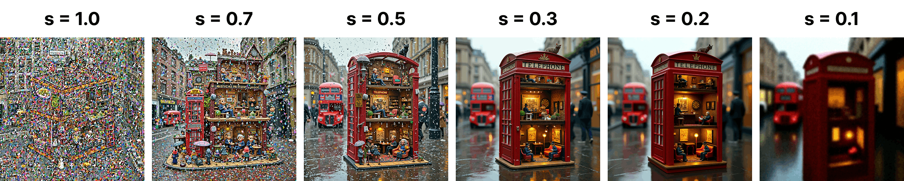
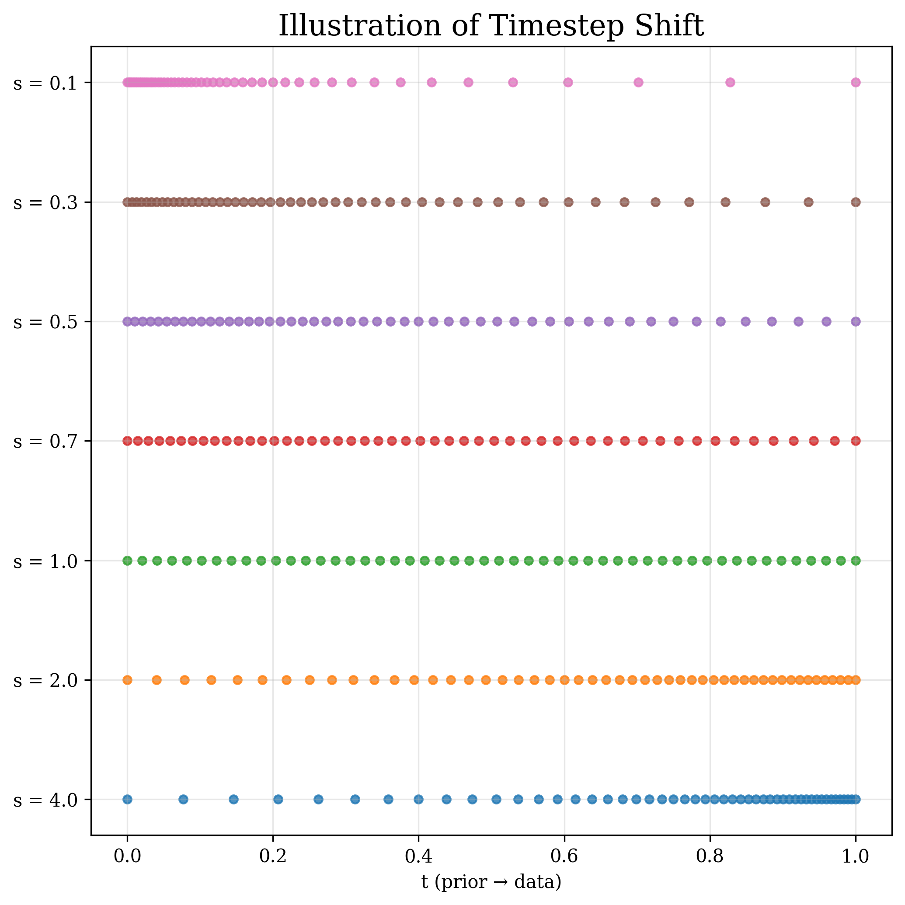
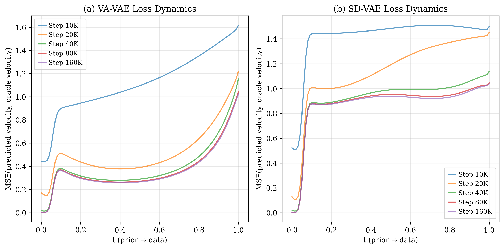

TL;DR: We derive the closed-form oracle velocity for flow matching and reveal that its training target is inherently two-stage: a multi-sample guided navigation regime near the prior and a single-sample dominated refinement regime near the data.
Abstract
Flow-based diffusion models have emerged as a leading paradigm for training generative models across images and videos. However, their memorization-generalization behavior remains poorly understood. In this work, we revisit the flow matching (FM) objective and study its marginal velocity field, which admits a closed-form expression, allowing exact computation of the oracle FM target. Analyzing this oracle velocity field reveals that flow-based diffusion models inherently formulate a two-stage training target: an early stage guided by a mixture of data modes, and a later stage dominated by the nearest data sample. The two-stage objective leads to distinct learning behaviors: the early navigation stage generalizes across data modes to form global layouts, whereas the later refinement stage increasingly memorizes fine-grained details. Leveraging these insights, we explain the effectiveness of practical techniques such as timestep-shifted schedules, classifier-free guidance intervals, and latent space design choices. Our study deepens the understanding of diffusion model training dynamics and offers principles for guiding future architectural and algorithmic improvements.
Closed-Form Oracle Velocity &
the Two-Stage Training Target
Flow matching (FM) learns a velocity field $v_t(x_t;\theta)$ that continuously transports a simple prior distribution $p_{\text{prior}}$ to a target data distribution $p_{\text{data}}$ over $t\in[0,1]$. Since the marginal velocity field is generally intractable, conditional flow matching (CFM) instead regresses on a per-sample conditional target $u_t(x_t\mid x_1)$, which has been shown to share identical gradients with FM. The probability path is constructed via linear interpolation:
For rectified flow, we set $(\alpha_t, \sigma_t) = (t, 1{-}t)$ and adopt $u_t(x_t\mid x_1) = x_1 - x_0$ as the training target. We show that, under a Gaussian prior and a finite training set $\{x_1^{(i)}\}_{i=1}^N$, the oracle velocity field admits a closed-form expression:
where $A_t = \dot{\alpha}_t - \frac{\alpha_t\,\dot{\sigma}_t}{\sigma_t}$, $B_t = \frac{\dot{\sigma}_t}{\sigma_t}$, and the posterior weights $\gamma_i$ are as follows:
Intuitively, this oracle velocity is a weighted average over all training samples, where $\gamma_i$ determines each sample's contribution. Its behavior changes sharply with timestep $t$:
- Navigation stage: Multiple samples carry significant weight. The oracle points toward a mixture of relevant data modes.
- Refinement stage: The posterior collapses onto the single nearest sample. The oracle reduces to the standard conditional target $x_1 - x_0$.

The transition is sharp: the top-1 posterior weight saturates to nearly 1.0 beyond $t \approx 0.1$ on ImageNet data (our case: latent dimension $D = 8192$, classwise sample size $N\approx 1400$). These two factors govern when this transition occurs:
- Higher data dimensionality $D$ accelerates the transition.
- Larger sample size $N$ delays the transition.

Model Behaviors under the Two-Stage Target
The two-stage target leads to distinct behaviors in trained models.
Navigation forms layouts; refinement polishes details.
Visualizing intermediate single-step predictions of a LightningDiT-XL model, we observe that early timesteps produce coarse, class-mean-like outputs that progressively resolve into coherent layouts by $t \approx 0.2$. Beyond this point, the model focuses exclusively on sharpening local textures and fine details with minimal structural change.

Generalization stems from navigation; memorization stems from refinement.
Using a mixed sampling scheme (i.e., oracle velocity up to $t_{\text{switch}}$, then model predictions) we find that early switching ($t_{\text{switch}} < 0.2$) yields diverse, novel images, while late switching ($t_{\text{switch}} > 0.2$) reproduces training samples nearly exactly. The navigation stage is inherently hard to memorize because strong prior corruption prevents the model from recovering any specific training trajectory.

Refinement generalizes to unseen data.
When we resume sampling from validation image latents at $t_{\text{resume}} \geq 0.2$, the model preserves the original global layout while improvising plausible fine details, confirming that the refinement capability transfers beyond the training set.

Model capacity matters asymmetrically.
All model sizes (Small, Base, XL) achieve nearly identical oracle loss in the navigation stage. The gap only emerges in refinement, where larger models and longer training yield clear gains. Navigation is a bottleneck that scaling alone does not resolve.

Practical Insights
Our two-stage perspective explains why several empirical techniques work and how to apply them more effectively.
Timestep shifting: give navigation more steps.
Under a fixed sampling budget, allocating modestly more steps to the navigation stage (shift factor $s < 1$) consistently improves generation quality. The sweet spot lies around $s = 0.5$ (for a LightningDiT-B/1 model trained on ImageNet), achieving the best gFID; over-shifting in either direction degrades quality. This effect is even more pronounced in higher-resolution models like Flux.1, where the navigation interval is more compressed.


CFG interval: target early-to-mid refinement.
Applying classifier-free guidance only on a selected sub-interval outperforms full-range CFG. The optimal window concentrates in the early-to-mid refinement stage. Crucially, applying CFG during the earliest navigation steps may hurt generation quality, as the amplified guidance under extreme noise can destabilize global layout formation.
Latent space: semantic structure helps both stages.
Comparing VA-VAE (DINO-aligned) and SD-VAE (reconstruction-only), the semantically structured latent space produces smoother oracle loss convergence and faster gFID improvement. A well-organized latent manifold facilitates clearer mode organization, benefiting both navigation and refinement.

BibTeX
@article{liu2025navigation,
title={From Navigation to Refinement: Revealing the Two-Stage Nature of Flow-based Diffusion Models through Oracle Velocity},
author={Liu, Haoming and Liu, Jinnuo and Li, Yanhao and Bai, Liuyang and Ji, Yunkai and Guo, Yuanhe and Wan, Shenji and Wen, Hongyi},
journal={arXiv preprint arXiv:2512.02826},
year={2025}
}